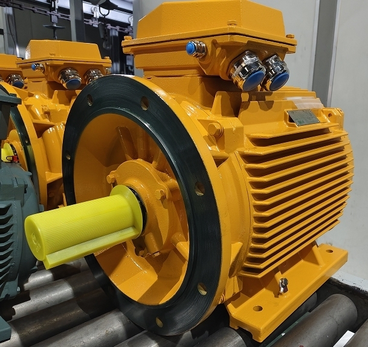

Industrial News

Comparing Low Voltage Motor Options for Optimal Performance
Low voltage motors are essential components in various applications, converting electrical energy into mechanical energy at lower voltage levels. These motors come in several types, including AC, DC, stepper, and servo motors. Each type serves unique functions across different sectors.

Selecting the right low voltage motor is crucial. A recent report highlighted that the global market for these motors reached USD 23.5 billion in 2024, with a projected growth of 7.5% annually. This growth emphasizes the importance of choosing the right motor to meet your specific needs effectively.
Key Takeaways
- Low voltage motors include AC, DC, stepper, and servo types, each suited for different tasks and industries.
- AC motors are cost-effective and reliable, ideal for household and industrial uses with high efficiency.
- DC motors offer precise speed control and high starting torque but need more maintenance.
- Stepper motors provide accurate positioning, perfect for automation and robotics applications.
- Servo motors deliver high precision and control, making them great for advanced industrial and medical uses.
Types of Low Voltage Motors
AC Motors
AC motors are among the most common types of low voltage motors. They convert alternating current into mechanical energy, making them ideal for various applications. I find their simplicity and reliability particularly appealing. Here are some key features of AC motors:
- Cost-Effective: AC motors are generally less expensive than other motor types, making them a popular choice for many applications.
- Long Lifespan: They often last longer due to fewer moving parts, which means less wear and tear.
- High Efficiency: Many AC motors operate at efficiency ratings ranging from 85% to 95%, depending on their design and application.
In my experience, AC motors excel in applications like household appliances, industrial machinery, and HVAC systems. For instance, I’ve seen them used in washing machines and fans, where their ability to provide high starting torque is crucial.
| Motor Class | Starting Torque | Starting Current | Slip |
|---|---|---|---|
| Class A | Normal | High | Low |
| Class B | Normal | Low | Low |
| Class C | High | Low | Normal |
| Class D | High | Low | High |
This table illustrates how AC motors are classified based on their performance characteristics. Understanding these classes helps in selecting the right motor for specific applications.
DC Motors
DC motors are another popular choice for low voltage applications. They operate on direct current and are known for their excellent speed control and high starting torque. I appreciate how versatile they can be in various settings. Here are some advantages and disadvantages of DC motors:
-
Advantages:
- High starting torque, making them suitable for applications that require quick acceleration.
- Simple speed control through voltage adjustments, allowing for precise regulation.
-
Disadvantages:
- They require more maintenance due to brush wear, which can lead to increased downtime.
- Lower efficiency compared to AC motors because of friction losses.
In my observations, DC motors are often used in applications like elevators and cranes, where precise control is essential. Their ability to generate full torque from zero speed makes them ideal for such tasks.
Stepper Motors
Stepper motors are unique low voltage motors that excel in applications requiring precise positioning and control. They operate by dividing a full rotation into a series of discrete steps, allowing for accurate movement. I find their capabilities particularly useful in automation and robotics. Here are some typical applications:
- 3D Printers: Stepper motors provide the precision needed for layer-by-layer printing.
- CNC Machines: They enable accurate cutting and shaping of materials.
- Robotics: In robotic arms, stepper motors allow for precise angular positioning.
The following table compares stepper motors with other low voltage motors:
| Characteristic | Stepper Motor | Other Low Voltage Motors (Servo Motors) |
|---|---|---|
| Control System | Open-loop (no feedback) | Closed-loop (with continuous feedback) |
| Positioning Resolution | Typically 0.9° to 1.8° per full step | Extremely high, <0.001° depending on encoder |
| Accuracy | ±5% of step angle (unloaded) | ±0.1% of full range |
This comparison highlights the strengths of stepper motors in applications requiring high precision. Their compact size and reliability make them suitable for environments with space constraints.
Servo Motors
Servo motors are a fascinating type of low voltage motor that I find incredibly useful in various applications. They excel in providing precise control over torque, speed, and position, making them indispensable in many industries. I have seen firsthand how their capabilities can transform projects, especially in automation and robotics.
One of the standout features of servo motors is their ability to operate with high accuracy. They utilize feedback systems, such as encoders, to ensure precise positioning. This feedback loop allows the motor to adjust its performance in real-time, which is crucial for applications requiring exact movements. For instance, I’ve observed servo motors in action in CNC machines, where they deliver the precision needed for intricate cuts.
Here are some common applications where I’ve noticed servo motors shine:
- Medical Equipment: They provide the reliability and precision necessary for devices like surgical robots.
- Automation Systems: In factories, servo motors control conveyor belts and robotic arms, enhancing efficiency.
- Hobby Applications: I’ve seen them in radio-controlled cars and drones, where their responsiveness is key to performance.
- Aviation: They play a vital role in controlling surfaces on aircraft, ensuring stability and safety.
The performance metrics of servo motors are impressive. They feature speed-torque curves that help in selecting the right motor for specific tasks. These curves illustrate how torque decreases as speed increases, which is essential for tuning the motor to meet operational demands. Here are some critical aspects to consider:
- Continuous Region: This is where the motor can operate indefinitely without overheating. It’s vital to keep torque and speed within this region for sustained use.
- Intermittent Region: This allows for short bursts of higher torque or speed, but it’s limited by thermal constraints.
- RMS Torque: The root mean square torque must remain within the continuous region to prevent overheating.
In my experience, servo motors are also replacing hydraulic and pneumatic actuators in many applications. They offer advantages like no oil leakage and more accurate actuation, which I find particularly beneficial in environments where cleanliness is crucial, such as food processing.
Overall, the versatility and performance of servo motors make them a top choice for many applications. Their compact size, high power, and accuracy allow them to fit seamlessly into various systems, from industrial automation to renewable energy solutions. If you’re considering a low voltage motor for your project, I highly recommend exploring servo motors for their unmatched precision and reliability.
Applications of Low Voltage Motors
Low voltage motors play a vital role across various sectors, enhancing efficiency and performance. I’ve seen firsthand how these motors are integrated into different applications, making them indispensable in today’s world.
Industrial Applications
In the industrial sector, low voltage motors are everywhere. They power machinery and equipment, driving automation and productivity. Here are some leading sectors utilizing these motors:
- Food & Beverages: This sector holds a significant market share, with low voltage motors used in processing and packaging lines. I’ve observed them in action, conveying ingredients, mixing, and bottling products.
- Automotive: Low voltage motors are crucial in manufacturing plants, powering robotics and main drive units. The rise of electric vehicles has further increased their demand.
- Water & Wastewater: I’ve seen low voltage motors dominate the market for water pumps, essential for irrigation and treatment processes.
These motors are preferred for their energy efficiency, compact size, and quiet operation, making them ideal for harsh environments.
Commercial Applications
In commercial settings, low voltage motors enhance convenience and functionality. I often notice them in:
- HVAC Systems: They regulate airflow and temperature, ensuring comfort in buildings.
- Elevators and Escalators: Low voltage motors provide smooth and reliable operation, crucial for safety and efficiency.
- Retail Displays: I’ve seen them used in automated systems for product displays, enhancing customer engagement.
These applications highlight how low voltage motors contribute to operational efficiency and user experience in commercial environments.
Residential Applications
Low voltage motors have transformed residential living. I find them in many smart home devices and appliances, such as:
- Smart Blinds and Curtains: These motors allow for quiet, automated adjustments, enhancing convenience.
- Kitchen Appliances: I’ve seen them in refrigerators and dishwashers, where they improve energy efficiency and performance.
- Robot Vacuums: These devices rely on compact DC motors for efficient navigation and cleaning.
The integration of low voltage motors in homes supports energy savings and modern living standards.
Advantages of Low Voltage Motors
Low voltage motors offer several advantages that make them a preferred choice in various applications. I have seen firsthand how these benefits translate into real-world efficiency and effectiveness.
Energy Efficiency
One of the standout features of low voltage motors is their energy efficiency. Industry data shows that high-efficiency motors, similar to low voltage motors, achieve about 4% higher efficiency compared to standard motors. This efficiency gain leads to significant energy savings when these motors replace older models. In my experience, I’ve noticed that businesses can reduce their energy consumption by approximately 2% to 5.2% when using low voltage motors, especially in applications where they operate at less than 40% load factor. This reduction not only lowers operational costs but also supports sustainability goals.
Compact Size
The compact size of low voltage motors is another major advantage. I find that their small footprint allows for easy installation in tight spaces, which is crucial in modern equipment design. For instance, the LM10 low voltage motor protection device fits seamlessly into standard Motor Control Center compartments. This modular design simplifies installation and reduces labor costs. The ability to install these motors in confined areas enables more efficient layouts, making them ideal for various applications, from industrial machinery to residential appliances.
Versatility
Low voltage motors are incredibly versatile, adapting to different environments and applications. They come in various designs, including induction and synchronous reluctance motors, allowing users to select the best option for their specific needs. I appreciate that these motors can operate in diverse conditions, from clean indoor environments to harsh industrial settings. Their compatibility with variable frequency drives enhances control and efficiency, making them suitable for a wide range of industries. Additionally, features like precise speed and torque control further improve their adaptability, ensuring they meet the demands of any application.
Disadvantages of Low Voltage Motors
Limited Power Output
One significant drawback of low voltage motors is their limited power output. I’ve noticed that these motors typically operate at lower power levels, which can restrict their use in high-demand applications. For instance, in heavy industrial settings, I often see that larger, high voltage motors are necessary to handle the substantial loads. Low voltage motors may struggle to deliver the required torque, especially in applications like large conveyor systems or heavy machinery.
Tip: If you plan to use a low voltage motor, assess the power requirements of your application carefully.
Specific Control Requirements
Low voltage motors come with specific control requirements that can complicate their operation. I’ve encountered situations where the need for a motor controller, starter, and protection devices adds complexity to the system. For example, a typical setup might include:
| Requirement/Aspect | Description |
|---|---|
| Motor Controller | Device to start and stop the motor; defined by NEC as governing electric power to the motor. |
| Motor Starter | Supplies adequate starting torque current under worst conditions. |
| Protection Devices | Separate short-circuit protection required; contactors operate magnetically via control coils. |
These components are essential for reliable operation but can increase installation time and costs. I’ve found that understanding these requirements is crucial for ensuring smooth operation.
Cost Considerations
When considering low voltage motors, cost can be a double-edged sword. Initially, they may seem more affordable than high voltage alternatives. However, I’ve learned that the long-term costs can add up. For example, low voltage systems often require thicker wiring due to higher current draw, which can increase maintenance and operational costs over time.
- Low voltage motors generally have lower initial costs, making them suitable for small applications.
- However, as system size increases, higher voltage systems can become more cost-effective due to energy savings and reduced cable costs.
In my experience, while the upfront investment for low voltage motors may be appealing, it’s essential to consider the total cost of ownership over time.
Comparison of Low Voltage Motor Types
When I compare low voltage motor types, I focus on their key features, performance metrics, and cost analysis. Each motor type has unique characteristics that make it suitable for specific applications.
Key Features
Servo motors stand out due to their closed-loop control systems. They use encoders and drive controllers for precise position and velocity feedback. AC servo motors adjust speed by varying frequency, while DC servos vary voltage. In contrast, stepper motors operate without feedback, dividing rotation into discrete steps. This simplicity makes them less costly but limits their torque at high speeds. I often find that servo motors are combined with gearboxes for accurate motion control in industrial settings, while stepper motors excel in simpler tasks like 3D printing.
| Feature | AC Servo Motor | DC Servo Motor | Stepper Motor |
|---|---|---|---|
| Control Method | Closed-loop with feedback | Closed-loop with feedback | Open-loop control, no feedback |
| Torque Characteristics | High torque across wide speed range | Limited torque under heavy cycles | Torque drops off at high speeds |
| Applications | Industrial CNC, robotic arms | Compact/mobile systems | Low to moderate speed tasks |
Performance Metrics
Performance metrics such as efficiency, torque, and speed vary significantly among these motor types. For example, I’ve noticed that AC induction motors exhibit a phase angle between current and voltage that inversely affects efficiency. Permanent magnet synchronous motors (PMSM) can operate near unity power factor but may lose efficiency at high speeds. In my experience, PMDC motors provide strong starting torque, making them ideal for applications requiring quick starts. On the other hand, stepper motors have defined pull-in and holding torque, enabling exact positioning.
- AC motors deliver steady torque across a wide speed range.
- PMDC motors excel at high torque at low speeds.
- Stepper motors are great for predictable loads.
Cost Analysis
Cost is a crucial factor when choosing a low voltage motor. Stepper motors are generally the most affordable option, with prices ranging from $44.68 to $81.00. Their simple design makes them ideal for low-power applications. DC motors fall in the middle price range, costing between $97.18 and $112.00. They offer a balance between cost and performance. Servo motors, particularly AC types, command a higher price, ranging from $298.49 to $382.00. Their advanced capabilities justify the cost, especially in applications requiring high precision and torque.
| Motor Type | Price Range (USD) | Key Characteristics |
|---|---|---|
| Stepper | $44.68 - $81.00 | Cost-effective, simple open-loop control, ideal for low power and precision tasks. |
| DC Motor | $97.18 - $112.00 | Moderate cost, suitable for low voltage applications, generally more expensive than stepper motors. |
| Servo Motor | $298.49 - $382.00 | Highest cost, closed-loop feedback, high precision, torque, and performance. |
How to Choose the Right Low Voltage Motor
Choosing the right low voltage motor can feel overwhelming, but I’ve learned that breaking it down into manageable steps makes the process easier. Here’s how I approach it.
Assessing Your Application Needs
First, I assess the specific needs of my application. This step is crucial because it influences the motor's performance and efficiency. Here are some factors I consider:
- Voltage Requirements: I ensure that the motor meets the low voltage definition, which is typically up to 600 V. Understanding this helps avoid compatibility issues.
- Cost Implications: I evaluate how cable length and copper usage affect overall costs. Voltage drop concerns in low voltage systems can lead to increased expenses.
- Physical Space: I take into account the physical constraints of my installation area. The size and location of the motor can significantly impact equipment distribution.
- Load Characteristics: I analyze the current draw differences between low and medium voltage motors. This helps me determine the right motor for my load requirements.
- Personnel Expertise: I consider the training needs of my team for handling power distribution systems. Ensuring they have the right skills is vital for safe operation.
- Distribution Equipment Costs: I factor in the costs and lead times for necessary distribution equipment. This can affect project timelines and budgets.
By carefully considering these factors, I can select a low voltage motor that ensures proper performance, cost efficiency, and safety.
Evaluating Motor Specifications
Next, I evaluate the motor specifications. This step is essential for ensuring that the motor I choose aligns with my application needs. Here’s what I focus on:
| Specification Aspect | Description | Impact on Low-Voltage Motor Selection |
|---|---|---|
| Horsepower Range | Low-voltage motors typically cover up to 1,000 hp, with some exceeding 5,000 hp in VFD applications. | Determines suitability for application size and power needs. |
| Cabling Size and Cost | Increasing horsepower requires larger copper conductors, raising cable size and installation complexity. | Affects installation cost and maintenance effort, especially for long runs. |
| Motor Size and Space | Low-voltage motors are generally smaller at lower hp, but medium-voltage options may be more compact above 1,000 hp. | Influences space constraints and system component sizing. |
| Winding Design and Insulation | Low-voltage motors use larger conductors with random or mush wound coils, providing cost-effective insulation. | Affects motor durability and performance characteristics. |
These specifications guide my selection process, ensuring I choose a motor that meets my operational requirements.
Considering Budget Constraints
Finally, I consider my budget constraints. Balancing price and performance is crucial to avoid overspending. Here are some insights I’ve gathered:
- Budget Impact Analysis (BIA): This method helps me evaluate how motor choices affect overall costs. I compare expenses with and without the motor to understand the financial impact.
- Sensitivity Analysis: I assess how changes in motor price and usage affect my budget. This analysis helps me make informed decisions.
- Long-Term Savings: While higher-quality motors may have higher upfront costs, they often provide long-term savings through better efficiency and reduced maintenance. I always weigh the initial investment against potential long-term benefits.
I’ve found that choosing the cheapest motor may seem attractive, but higher-quality options often deliver better performance and longer lifespans. This results in cost savings over time. For example, I’ve noticed that induction motors have lower upfront costs but are less efficient. In contrast, brushless DC motors, while pricier, offer improved efficiency and longevity.
By carefully considering these factors, I can select a low voltage motor that meets my needs while staying within budget.
In summary, low voltage motors come in various types, including AC, DC, stepper, and servo motors. Each type serves unique applications across industries, from industrial machinery to residential appliances. I’ve seen how matching the right motor type to specific needs enhances performance and efficiency.
Remember, selecting the correct motor prevents inefficiencies and potential failures. I encourage you to research thoroughly before making a decision. Resources like the EASA Technical Manual and U.S. Department of Energy guidelines can provide valuable insights into low voltage motor selection.
0users like this.